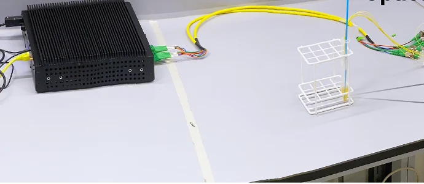

SMF biosensors
High-sensitivity fiber biosensing
Functionalized single-mode silica fiber sensors for highly sensitive, label-free detection of clinically relevant biomarkers.

Interrogator Fiber sensor in sample- 125 µm fiberMiniaturized
- Label-freeOptical detection
- High sensitivityQuantitative results
- Clinical-sampletesting